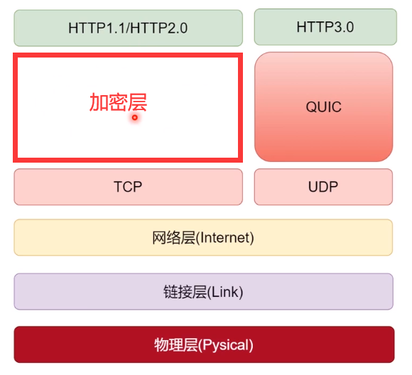
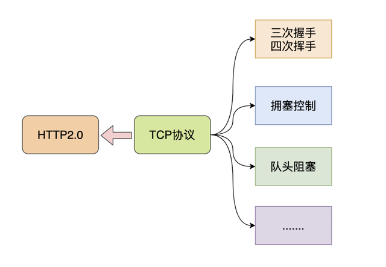
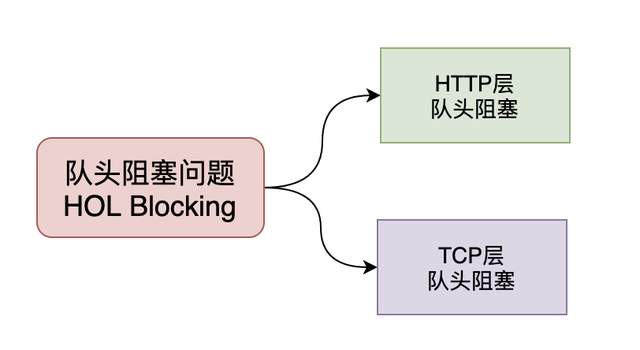

HTTP2.0
-
多路复用
-
防止队头阻塞
-
压缩 HTTP 头部
-
服务端推送
-
二进制分帧
前言
HTTP2.0 大幅度的提高了 web 性能，在 HTTP1.1 完全语义兼容的基础上，进一步减少了网络的延迟。实现低延迟高吞吐量。对于前端开发者而言，减少了优化工作。本文将重点围绕以下几点新特性的作用、工作过程以及如何更出色的完成了优化工作来介绍 HTTP2.0
- 二进制分帧
- 首部压缩
- 多路复用
- 请求优先级
- 服务器推送
一. 介绍
HTTP/2 是 HTTP 协议自 1999 年 HTTP1.1 发布后的首个更新，主要基于 SPDY 协议。
1.1 什么是 SPDY 协议
SPDY 是 Speedy 的昵音，意为“更快”。它是 Google 开发的基于 TCP 协议的应用层协议。目标是优化 HTTP 协议的性能，通过压缩、多路复用和优先级等技术，缩短网页的加载时间并提高安全性。SPDY 协议的核心思想是尽量减少 TCP 连接数。SPDY 并不是一种用于替代 HTTP 的协议，而是对 HTTP 协议的增强。
1.2 HTTP1.X 的缺点
任何事物的更新都是为了弥补或修复上个版本的某些问题，那么我们来看看 HTTP1.x 都有哪些缺点以至于我们要使用 HTTP2.0。
HTTP1.x 有以下几个主要缺点：
- HTTP/1.0 一次只允许在一个 TCP 连接上发起一个请求，HTTP/1.1 使用的流水线技术也只能部分处理请求并发，仍然会存在队列头阻塞问题，因此客户端在需要发起多次请求时，通常会采用建立多连接来减少延迟。
- 单向请求，只能由客户端发起。
- 请求报文与响应报文首部信息冗余量大。
- 数据未压缩，导致数据的传输量大
我们可以通过一个链接来对比一下 HTTP2.0 到底比 HTTP1.x 快了多少。链接地址
二. 二进制分帧
在不改变 HTTP1.x 的语义、方法、状态码、URL 以及首部字段的情况下，HTTP2.0 是怎样突破 HTTP1.1 的性能限制，改进传输性能，实现低延迟高吞吐量的呢？关键之一就是在应用层（HTTP）和传输层（TCP）之间增加一个二进制分帧层。
在整理二进制分帧及其作用的时候我们先来铺垫一点关于帧的知识：
- 帧：HTTP2.0 通信的最小单位，所有帧都共享一个 8 字节的首部，其中包含帧的长度、类型、标志、还有一个保留位，并且至少有标识出当前帧所属的流的标识符，帧承载着特定类型的数据，如 HTTP 首部、负荷、等等。
- 消息：比帧大的通讯单位，是指逻辑上的 HTTP 消息，比如请求、响应等。由一个或多个帧组成
- 流：比消息大的通讯单位。是 TCP 连接中的一个虚拟通道，可以承载双向的消息。每个流都有一个唯一的整数标识符
HTTP2.0 中所有加强性能的核心是二进制传输，在 HTTP1.x
中，我们是通过文本的方式传输数据。基于文本的方式传输数据存在很多缺陷，文本的表现形式有多样性，因此要做到健壮性考虑的场景必然有很多，但是二进制则不同，只有 0 和 1
的组合，因此选择了二进制传输，实现方便且健壮。 在 HTTP2.0 中引入了新的编码机制，所有传输的数据都会被分割，并采用二进制格式编码。

为了保证 HTTP 不受影响，那就需要在应用层（HTTP2.0）和传输层（TCP or
UDP）之间增加一个二进制分帧层。在二进制分帧层上，HTTP2.0会将所有传输的信息分为更小的消息和帧，并采用二进制格式编码，其中HTTP1.x的首部信息会被封装到Headers帧，而Request Body则封装到Data帧。
三. 首部压缩
HTTP1.1 并不支持 HTTP 首部压缩，为此 SPDY 和 HTTP2.0 出现了。SPDY 是用的是 DEFLATE 算法，而 HTTP2.0 则使用了专门为首部压缩设计的 HPACK 算法。
HTTP 每次通讯（请求或响应）都会携带首部信息用于描述资源属性。
在 HTTP1.0 中，我们使用文本的形式传输 header，在 header 中携带 cookie 的话，每次都需要重复传输几百到几千的字节，这着实是一笔不小的开销。
在 HTTP2.0 中，我们使用了 HPACK（HTTP2 头部压缩算法）压缩格式对传输的 header 进行编码，减少了 header 的大小。并在两端维护了索引表，用于记录出现过的 header，后面在传输过程中就可以传输已经记录过的 header 的键名，对端收到数据后就可以通过键名找到对应的值。
四. 多路复用
在 HTTP1.x 中，我们经常会使用到雪碧图、使用多个域名等方式来进行优化，都是因为浏览器限制了同一个域名下的请求数量，当页面需要请求很多资源的时候，队头阻塞（Head of line blocking）会导致在达到最大请求时，资源需要等待其他资源请求完成后才能继续发送。
HTTP2.0 中,基于二进制分帧层，HTTP2.0 可以在共享 TCP 连接的基础上同时发送请求和响应。HTTP 消息被分解为独立的帧，而不破坏消息本身的语义，交错发出去，在另一端根据流标识符和首部将他们重新组装起来。 通过该技术，可以避免 HTTP 旧版本的队头阻塞问题，极大提高传输性能。
五. 请求优先级
把 HTTP 消息分为很多独立帧之后，就可以通过优化这些帧的交错和传输顺序进一步优化性能。
六. 服务器推送
HTTP2.0 新增的一个强大的新功能，就是服务器可以对一个客户端请求发送多个响应。服务器向客户端推送资源无需客户端明确的请求。
服务端根据客户端的请求，提前返回多个响应，推送额外的资源给客户端。如下图，客户端请求 stream 1(/page.html)。服务端在返回 stream 1 的消息的同时推送了 stream
2(/script.js)和 stream 4(/style.css)  服务端推送是一种在客户端请求之前发送数据的机制。在 HTTP2.0 中，服务器可以对一个客户端的请求发送多个响应。如果一个请求是由你的主页发送的，服务器可能会响应主页内容、logo
以及样式表，因为他知道客户端会用到这些东西。这样不但减轻了数据传送冗余步骤，也加快了页面响应的速度，提高了用户体验。
服务端推送是一种在客户端请求之前发送数据的机制。在 HTTP2.0 中，服务器可以对一个客户端的请求发送多个响应。如果一个请求是由你的主页发送的，服务器可能会响应主页内容、logo
以及样式表，因为他知道客户端会用到这些东西。这样不但减轻了数据传送冗余步骤，也加快了页面响应的速度，提高了用户体验。
推送的缺点：所有推送的资源都必须遵守同源策略。换句话说，服务器不能随便将第三方资源推送给客户端，而必须是经过双方的确认才行。
HTTP3.0
把 TCP 层拆成 QUIC + UDP

HTTP2.0
1.1 HTTP2.0 和 TCP 的爱恨纠葛
HTTP2.0 是 2015 年推出的，还是比较年轻的，其重要的二进制分帧协议、多路复用、头部压缩、服务端推送等重要优化使 HTTP 协议真正上了一个新台阶。

像谷歌这种重要的公司并没有满足于此，而且想继续提升 HTTP 的性能，花最少的时间和资源获取极致体验。
那么肯定要问 HTTP2.0 虽然性能已经不错了，还有什么不足吗？
建立连接时间长(本质上是 TCP 的问题) 队头阻塞问题 移动互联网领域表现不佳(弱网环境) ......
熟悉 HTTP2.0 协议的同学应该知道，这些缺点基本都是由于 TCP 协议引起的，水能载舟亦能覆舟，其实 TCP 也很无辜呀！

在我们眼里，TCP 是面向连接、可靠的传输层协议，当前几乎所有重要的协议和应用都是基于 TCP 来实现的。
网络环境的改变速度很快，但是 TCP 协议相对缓慢，正是这种矛盾促使谷歌做出了一个看似出乎意料的决定-基于 UDP 来开发新一代 HTTP 协议。
1.2 谷歌为什么选择 UDP
上文提到，谷歌选择 UDP 是看似出乎意料的，仔细想一想其实很有道理。
我们单纯地看看 TCP 协议的不足和 UDP 的一些优点：
基于 TCP 开发的设备和协议非常多，兼容困难 TCP 协议栈是 Linux 内部的重要部分，修改和升级成本很大 UDP 本身是无连接的、没有建链和拆链成本 UDP 的数据包无队头阻塞问题 UDP 改造成本小
从上面的对比可以知道，谷歌要想从 TCP 上进行改造升级绝非易事，但是 UDP 虽然没有 TCP 为了保证可靠连接而引发的问题，但是 UDP 本身不可靠，又不能直接用。

综合而知，谷歌决定在 UDP 基础上改造一个具备 TCP 协议优点的新协议也就顺理成章了，这个新协议就是 QUIC 协议。
1.3 QUIC 协议和 HTTP3.0
QUIC 其实是 Quick UDP Internet Connections 的缩写，直译为快速 UDP 互联网连接。

我们来看看维基百科对于 QUIC 协议的一些介绍：
QUIC 协议最初由 Google 的 Jim Roskind 设计，实施并于 2012 年部署，在 2013 年随着实验的扩大而公开宣布，并向 IETF 进行了描述。
QUIC 提高了当前正在使用 TCP 的面向连接的 Web 应用程序的性能。它在两个端点之间使用用户数据报协议（UDP）建立多个复用连接来实现此目的。
QUIC 的次要目标包括减少连接和传输延迟，在每个方向进行带宽估计以避免拥塞。它还将拥塞控制算法移动到用户空间，而不是内核空间，此外使用前向纠错（FEC）进行扩展，以在出现错误时进一步提高性能。
HTTP3.0 又称为 HTTP Over QUIC，其弃用 TCP 协议，改为使用基于 UDP 协议的 QUIC 协议来实现。

QUIC 协议详解
择其善者而从之，其不善者而改之。
HTTP3.0 既然选择了 QUIC 协议，也就意味着 HTTP3.0 基本继承了 HTTP2.0 的强大功能，并且进一步解决了 HTTP2.0 存在的一些问题，同时必然引入了新的问题。

QUIC 协议必须要实现 HTTP2.0 在 TCP 协议上的重要功能，同时解决遗留问题，我们来看看 QUIC 是如何实现的。
2.1 队头阻塞问题
队头阻塞 Head-of-line blocking（缩写为 HOL blocking）是计算机网络中是一种性能受限的现象，通俗来说就是：一个数据包影响了一堆数据包，它不来大家都走不了。
队头阻塞问题可能存在于 HTTP 层和 TCP 层，在 HTTP1.x 时两个层次都存在该问题。

HTTP2.0 协议的多路复用机制解决了 HTTP 层的队头阻塞问题，但是在 TCP 层仍然存在队头阻塞问题。
TCP 协议在收到数据包之后，这部分数据可能是乱序到达的，但是 TCP 必须将所有数据收集排序整合后给上层使用，如果其中某个包丢失了，就必须等待重传，从而出现某个丢包数据阻塞整个连接的数据使用。
QUIC 协议是基于 UDP 协议实现的，在一条链接上可以有多个流，流与流之间是互不影响的，当一个流出现丢包影响范围非常小，从而解决队头阻塞问题。
2.2 0RTT 建链
衡量网络建链的常用指标是 RTT Round-Trip Time，也就是数据包一来一回的时间消耗。

RTT 包括三部分：往返传播时延、网络设备内排队时延、应用程序数据处理时延。

一般来说 HTTPS 协议要建立完整链接包括:TCP 握手和 TLS 握手，总计需要至少 2-3 个 RTT，普通的 HTTP 协议也需要至少 1 个 RTT 才可以完成握手。
然而，QUIC 协议可以实现在第一个包就可以包含有效的应用数据，从而实现 0RTT，但这也是有条件的。

简单来说，基于 TCP 协议和 TLS 协议的 HTTP2.0 在真正发送数据包之前需要花费一些时间来完成握手和加密协商，完成之后才可以真正传输业务数据。
但是 QUIC 则第一个数据包就可以发业务数据，从而在连接延时有很大优势，可以节约数百毫秒的时间。

QUIC 的 0RTT 也是需要条件的，对于第一次交互的客户端和服务端 0RTT 也是做不到的，毕竟双方完全陌生。
因此，QUIC 协议可以分为首次连接和非首次连接，两种情况进行讨论。
2.3 首次连接和非首次连接
使用 QUIC 协议的客户端和服务端要使用 1RTT 进行密钥交换，使用的交换算法是 DH(Diffie-Hellman)迪菲-赫尔曼算法。
DH 算法开辟了密钥交换的新思路，在之前的文章中提到的 RSA 算法也是基于这种思想实现的，但是 DH 算法和 RSA 的密钥交换不完全一样，感兴趣的读者可以看看 DH 算法的数学原理。
DH 算法开辟了密钥交换的新思路，在之前的文章中提到的 RSA 算法也是基于这种思想实现的，但是 DH 算法和 RSA 的密钥交换不完全一样，感兴趣的读者可以看看 DH 算法的数学原理。
2.3.1 首次连接
简单来说一下，首次连接时客户端和服务端的密钥协商和数据传输过程，其中涉及了 DH 算法的基本过程：
- 客户端对于首次连接的服务端先发送 client hello 请求。
- 服务端生成一个素数 p 和一个整数 g，同时生成一个随机数 (笔误-此处应该是 Ks_pri)为私钥，然后计算出公钥 = mod p，服务端将，p，g 三个元素打包称为 config，后续发送给客户端。
- 客户端随机生成一个自己的私钥，再从 config 中读取 g 和 p，计算客户端公钥 = mod p。
- 客户端使用自己的私钥和服务端发来的 config 中读取的服务端公钥，生成后续数据加密用的密钥 K = mod p。
- 客户端使用密钥 K 加密业务数据，并追加自己的公钥，都传递给服务端。
- 服务端根据自己的私钥和客户端公钥生成客户端加密用的密钥 K = mod p。
- 为了保证数据安全，上述生成的密钥 K 只会生成使用 1 次，后续服务端会按照相同的规则生成一套全新的公钥和私钥，并使用这组公私钥生成新的密钥 M。
- 服务端将新公钥和新密钥 M 加密的数据发给客户端，客户端根据新的服务端公钥和自己原来的私钥计算出本次的密钥 M，进行解密。
- 之后的客户端和服务端数据交互都使用密钥 M 来完成，密钥 K 只使用 1 次。

2.3.2 非首次连接
前面提到客户端和服务端首次连接时服务端传递了 config 包，里面包含了服务端公钥和两个随机数，客户端会将 config 存储下来，后续再连接时可以直接使用，从而跳过这个 1RTT，实现 0RTT 的业务数据交互。
客户端保存 config 是有时间期限的，在 config 失效之后仍然需要进行首次连接时的密钥交换。
2.4 前向安全问题
前向安全是密码学领域的专业术语，看下百度上的解释：
前向安全或前向保密 Forward Secrecy 是密码学中通讯协议的安全属性，指的是长期使用的主密钥泄漏不会导致过去的会话密钥泄漏。
前向安全能够保护过去进行的通讯不受密码或密钥在未来暴露的威胁，如果系统具有前向安全性，就可以保证在主密钥泄露时历史通讯的安全，即使系统遭到主动攻击也是如此。
通俗来说，前向安全指的是密钥泄漏也不会让之前加密的数据被泄漏，影响的只有当前，对之前的数据无影响。
前面提到 QUIC 协议首次连接时先后生成了两个加密密钥，由于 config 被客户端存储了，如果期间服务端私钥泄漏，那么可以根据 K = mod p 计算出密钥 K。
如果一直使用这个密钥进行加解密，那么就可以用 K 解密所有历史消息，因此后续又生成了新密钥，使用其进行加解密，当时完成交互时则销毁，从而实现了前向安全。

2.5 前向纠错
前向纠错是通信领域的术语，看下百科的解释：
前向纠错也叫前向纠错码 Forward Error Correction 简称 FEC 是增加数据通讯可信度的方法，在单向通讯信道中，一旦错误被发现，其接收器将无权再请求传输。
FEC 是利用数据进行传输冗余信息的方法，当传输中出现错误，将允许接收器再建数据。
听这段描述就是做校验的，看看 QUIC 协议是如何实现的：
QUIC 每发送一组数据就对这组数据进行异或运算，并将结果作为一个 FEC 包发送出去，接收方收到这一组数据后根据数据包和 FEC 包即可进行校验和纠错。
2.6 连接迁移
网络切换几乎无时无刻不在发生。
TCP 协议使用五元组来表示一条唯一的连接，当我们从 4G 环境切换到 wifi 环境时，手机的 IP 地址就会发生变化，这时必须创建新的 TCP 连接才能继续传输数据。
QUIC 协议基于 UDP 实现摒弃了五元组的概念，使用 64 位的随机数作为连接的 ID，并使用该 ID 表示连接。
基于 QUIC 协议之下，我们在日常 wifi 和 4G 切换时，或者不同基站之间切换都不会重连，从而提高业务层的体验。

QUIC 的应用和前景
通过前面的一些介绍我们看出来 QUIC 协议虽然是基于 UDP 来实现的，但是它将 TCP 的重要功能都进行了实现和优化，否则使用者是不会买账的。
QUIC 协议的核心思想是将 TCP 协议在内核实现的诸如可靠传输、流量控制、拥塞控制等功能转移到用户态来实现，同时在加密传输方向的尝试也推动了 TLS1.3 的发展。
但是 TCP 协议的势力过于强大，很多网络设备甚至对于 UDP 数据包做了很多不友好的策略，进行拦截从而导致成功连接率下降。
主导者谷歌在自家产品做了很多尝试，国内腾讯公司也做了很多关于 QUIC 协议的尝试。
其中腾讯云对 QUIC 协议表现了很大的兴趣，并做了一些优化然后在一些重点产品中对连接迁移、QUIC 成功率、弱网环境耗时等进行了实验，给出了来自生产环境的诸多宝贵数据。
简单看一组腾讯云在移动互联网场景下的不同丢包率下的请求耗时分布：

任何新生事物的推动都是需要时间的，出现多年的 HTTP2.0 和 HTTPS 协议的普及度都没有预想高，IPv6 也是如此，不过 QUIC 已经展现了强大的生命力，让我们拭目以待吧！